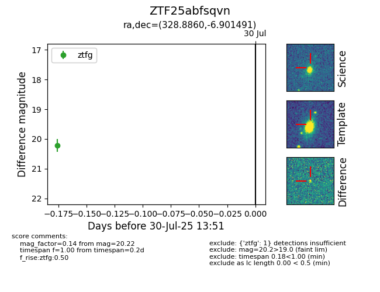

Target ZTF25abfsqvn at 2025-07-30 13:51, see:
FINK: fink-portal.org/ZTF25abfsqvn
Lasair: lasair-ztf.lsst.ac.uk/objects/ZTF25abfsqvn
ALeRCE: alerce.online/object/ZTF25abfsqvn
alt names
ZTF25abfsqvn (ztf,fink)
coordinates:
equatorial (ra, dec) = (328.8860,-6.90149)
galactic (l, b) = (50.5452,-43.68090)
photometry
last ztfg=20.22
1 ztfg detections
